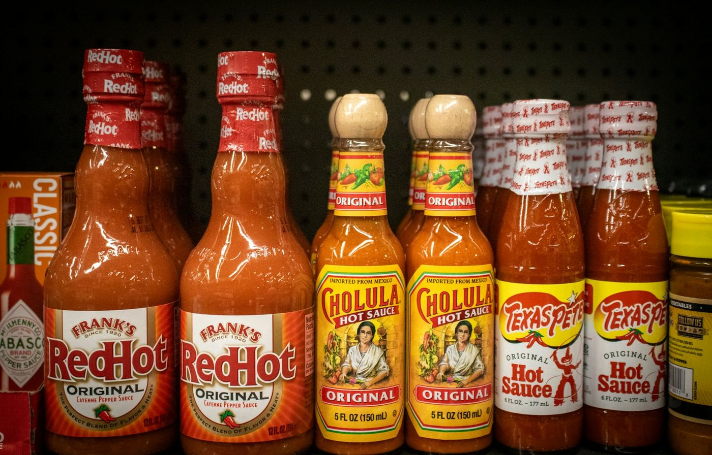
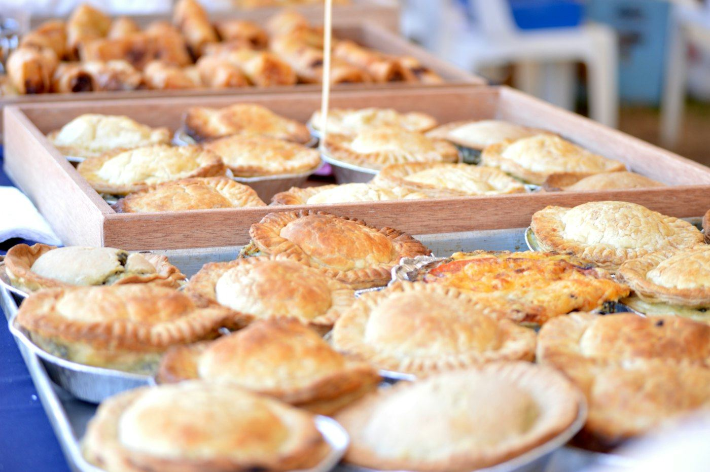
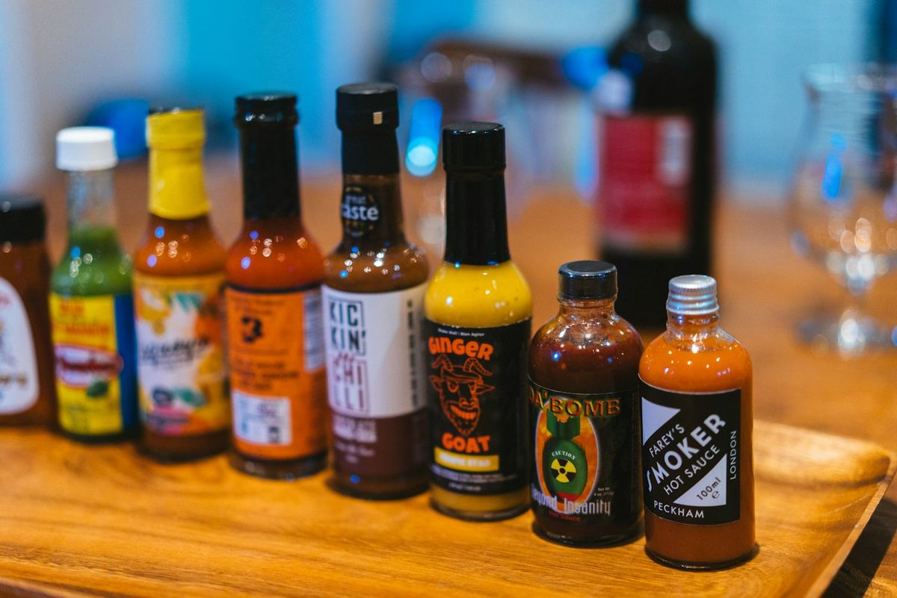
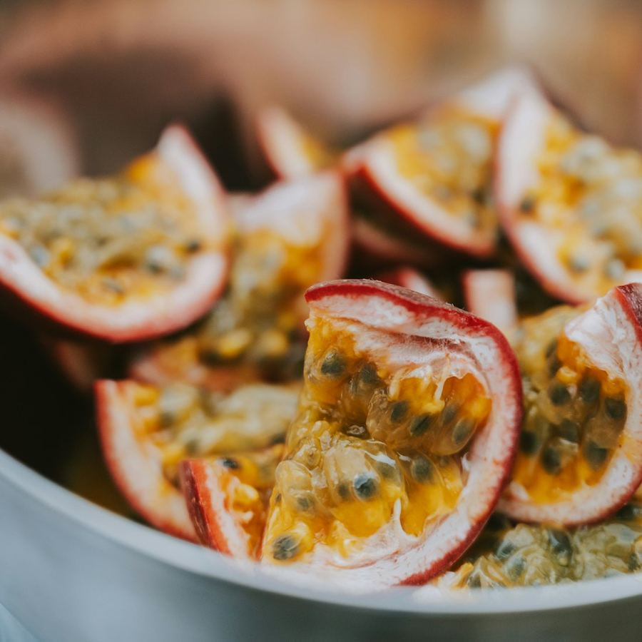
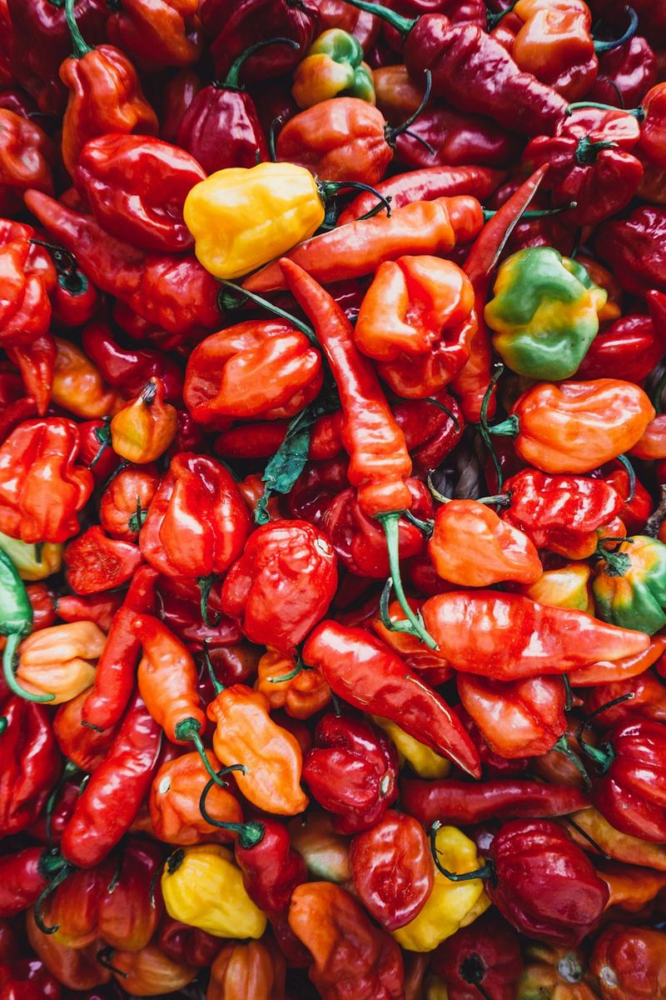

TodaLatinoaméricaen una sola tienda
Sauces, chiles, farines, bières, douceurs et empanadas maison : tout le continent tient dans notre boutique de l'avenue Jean Volders.

Ce qu'on trouve chez nous
La vitrine est discrète, l'intérieur est plein à craquer. Quatre bonnes raisons de pousser la porte.

Empanadas maison
Pâte de maïs, farce viande et pommes de terre, avec une sauce piquante.
Les empanadas
Sauces piquantes
Une cinquantaine de sauces, de la plus douce au vrai feu.
Le picantómetro
Pulpes & boissons
Maracuyá, lulo, sodas et bières d'Amérique latine.
Le voyageTortillas & farines
Tortillas de maïs, farines, haricots et chiles séchés.
Le MexiqueUne cinquantaine de sauces, des chiles séchés, du dulce de leche, de la yerba, de l'Inca Kola et des empanadas encore tièdes.

Avis de clients
Satisfaction sur la boutique en ligne
Perfecte service !
Ives C. · boutique en ligneImpecable, al día siguiente ya tenía mi pedido en casa.
María Belén B. · boutique en ligneDélais de livraison respectés.
Bernard H. · boutique en lignePassez nous voir
Avenue Jean Volders 52, 1060 Saint-Gilles, à deux pas de la Porte de Hal. Sur place, on vous conseille et on vous trouve le produit de chez vous.
- Mardi10h – 20h
- Mercredi10h – 20h
- Jeudi10h – 20h
- Vendredi10h – 20h30
- Samedi10h – 20h30
- Dimanche10h – 17h30
- LundiFermé